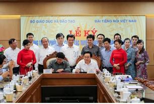
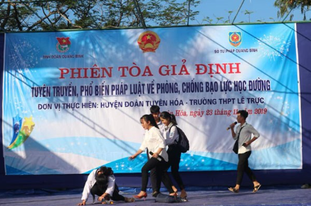

Tin Tức Newsss

Đẩy mạnh tuyên truyền về giáo dục trên các kênh nói của Đài Tiếng nói Việt Nam
Chiều 8/10, tại bộ GD&ĐT đã diễn lễ kỷ kết chương trình phối hợp công tác tuyên truyền về giáo dục và đào tạo giai đoạn 2019-2025 giữa bộ GD&ĐT và Đài Tiếng nói Việt Nam (TNVN). Bộ truownggr Bộ GD&ĐT Phùng Xuân Nhạ và Tổng Giám đốc Đài TNVN Nguyễn Thế Kỷ dự lễ ký.

đổi mới phương thức tuyên truyền phổ biến giáo dục pháp luật cho đoàn viên, thanh niên
(Quang Binh Portal) - Phổ biến giáo dục pháp luật là một trong những nội dung quan trọng và thường xiueen nhắm góp phần giáo dục đạo đức, lối sống hình thành nhần cách cho thế hệ trẻ. Để những kiến thức về pháp luật voonss khô khan trở nên gần gũi hơn với bạn trẻ thì đòi hỏi các cấp bộ Đoàn phải đổi mới......